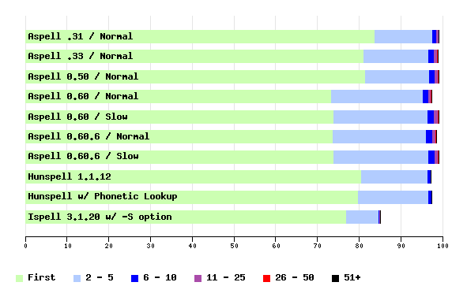

| Score | Total Not Found | Total Found | First | 1 - 5 | 1 - 10 | 1 - 25 | 1 - 50 | Any | |
|---|---|---|---|---|---|---|---|---|---|
| Aspell .31 / Normal | 99.2 | 30 | 3806 | 83.9 | 97.7 | 98.6 | 99.1 | 99.2 | 99.2 |
| Aspell .33 / Normal | 99.0 | 39 | 3797 | 81.2 | 96.6 | 98.2 | 98.8 | 98.9 | 99.0 |
| Aspell 0.50 / Normal | 99.1 | 35 | 3801 | 81.5 | 96.8 | 98.2 | 99.0 | 99.1 | 99.1 |
| Aspell 0.60 / Normal | 97.5 | 96 | 3740 | 73.3 | 95.3 | 96.7 | 97.3 | 97.5 | 97.5 |
| Aspell 0.60 / Slow | 99.1 | 35 | 3801 | 74.0 | 96.5 | 98.1 | 98.9 | 99.1 | 99.1 |
| Aspell 0.60.6 / Normal | 98.5 | 56 | 3780 | 73.8 | 96.1 | 97.6 | 98.3 | 98.5 | 98.5 |
| Aspell 0.60.6 / Slow | 99.2 | 31 | 3805 | 74.0 | 96.6 | 98.2 | 99.0 | 99.2 | 99.2 |
| Hunspell 1.1.12 | 97.1 | 110 | 3726 | 80.5 | 96.5 | 97.1 | 97.1 | 97.1 | 97.1 |
| Hunspell w/ Phonetic Lookup | 97.5 | 96 | 3740 | 79.9 | 96.6 | 97.5 | 97.5 | 97.5 | 97.5 |
| Ispell 3.1.20 w/ -S option | 85.1 | 570 | 3266 | 77.0 | 84.7 | 85.0 | 85.1 | 85.1 | 85.1 |
The Score is: (Total Found)/(Total)*100
First is: (Total Found First On List)/(Total)*100,
1-5 is: (Total Found 1st - 5th)/(Total)*100, etc...

Graph created with Ploticus
| Min | 5% | 25% | 50% | 75% | 95% | Max | |
|---|---|---|---|---|---|---|---|
| Aspell .31 / Normal | 1 | 3 | 6 | 10 | 16 | 35 | 100 |
| Aspell .33 / Normal | 1 | 4 | 6 | 9 | 16 | 31 | 92 |
| Aspell 0.50 / Normal | 1 | 3 | 6 | 9 | 15 | 32 | 89 |
| Aspell 0.60 / Normal | 1 | 3 | 6 | 10 | 18 | 44 | 100 |
| Aspell 0.60 / Slow | 3 | 4 | 7 | 11 | 20 | 47 | 100 |
| Aspell 0.60.6 / Normal | 1 | 3 | 6 | 9 | 17 | 43 | 99 |
| Aspell 0.60.6 / Slow | 2 | 3 | 6 | 11 | 19 | 45 | 100 |
| Hunspell 1.1.12 | 1 | 1 | 2 | 5 | 5 | 7 | 15 |
| Hunspell w/ Phonetic Lookup | 1 | 1 | 2 | 6 | 7 | 9 | 15 |
| Ispell 3.1.20 w/ -S option | 0 | 0 | 1 | 1 | 3 | 7 | 26 |
| Aspell .31 / Normal | 24.10 |
| Aspell .33 / Normal | 189.28 |
| Aspell 0.50 / Normal | 154.34 |
| Aspell 0.60 / Normal | 4.81 |
| Aspell 0.60 / Slow | 33.73 |
| Aspell 0.60.6 / Normal | 8.97 |
| Aspell 0.60.6 / Slow | 37.77 |
| Hunspell 1.1.12 | 185.55 |
| Hunspell w/ Phonetic Lookup | 330.69 |
| Ispell 3.1.20 w/ -S option | 1.61 |
The test data used here is a list of common misspelling provided by Wikipedia.